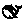

官方图标 · 黑白屏图库
官方 SVG 原文件保留在项目内，去除透明边缘后等比例缩放、居中留白，再按透明度转换为 1-bit 点阵。
下方以 3 倍尺寸展示像素效果，页面使用 24 px 版本；另提供 32 / 48 px 版本，供后续布局使用。
Codex 使用 OpenAI 官方资源包的黑色 Blossom。DeepSeek 提取官方横标中的鲸鱼路径；OpenRouter 使用新版官方 Ink 图形。
所有品牌图形属于各自权利人。查看 Codeck 页面效果
OpenAI 官方 Blossom
官方来源 · 原始 SVG
24 × 24 · 72 B32 × 32 · 128 B48 × 48 · 288 B
DeepSeek 官方鲸鱼
官方来源 · 原始 SVG

24 × 24 · 72 B32 × 32 · 128 B48 × 48 · 288 BOpenRouter 官方 Glyph · Ink
官方来源 · 原始 SVG
24 × 24 · 72 B32 × 32 · 128 B48 × 48 · 288 B